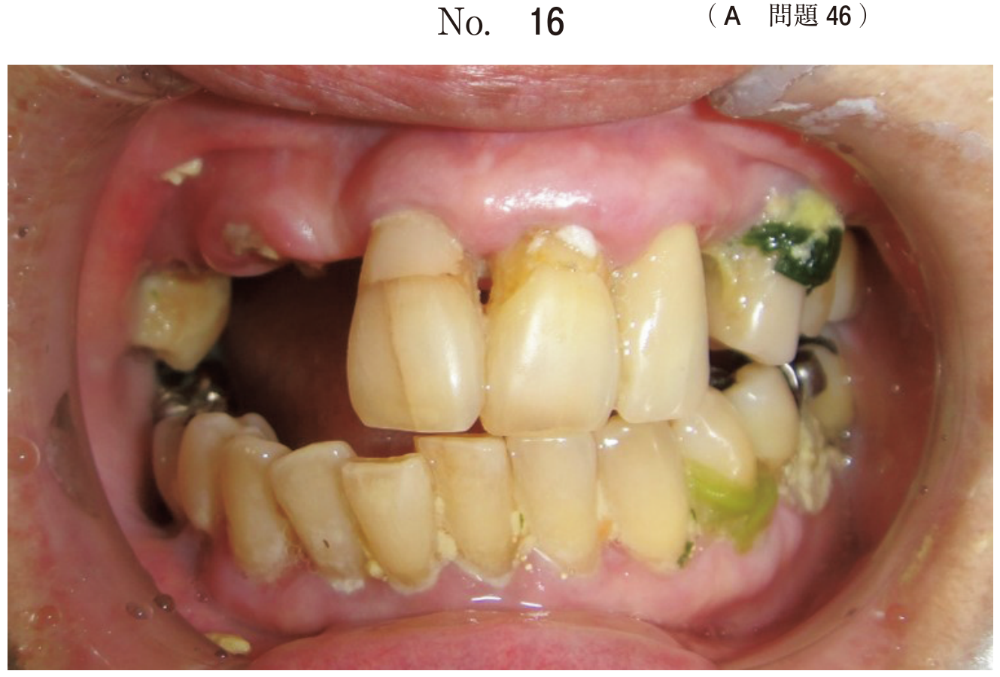
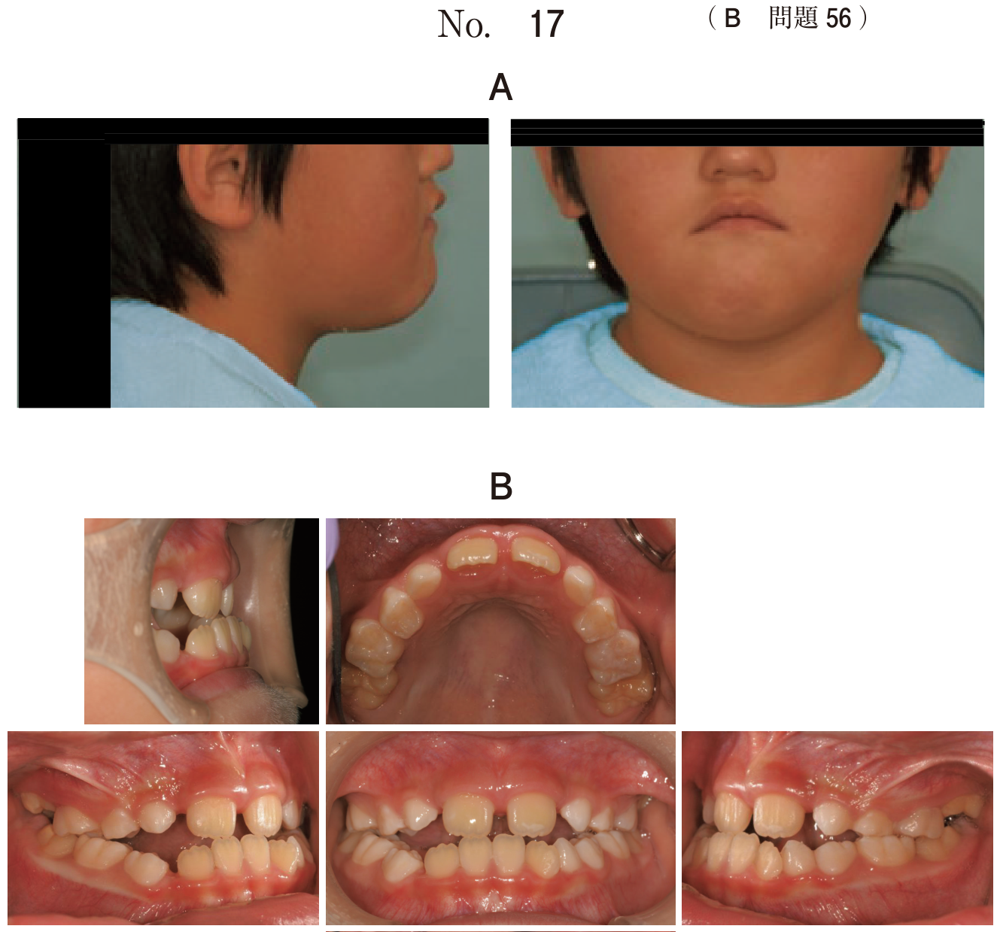
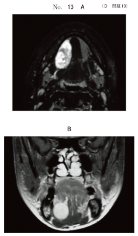
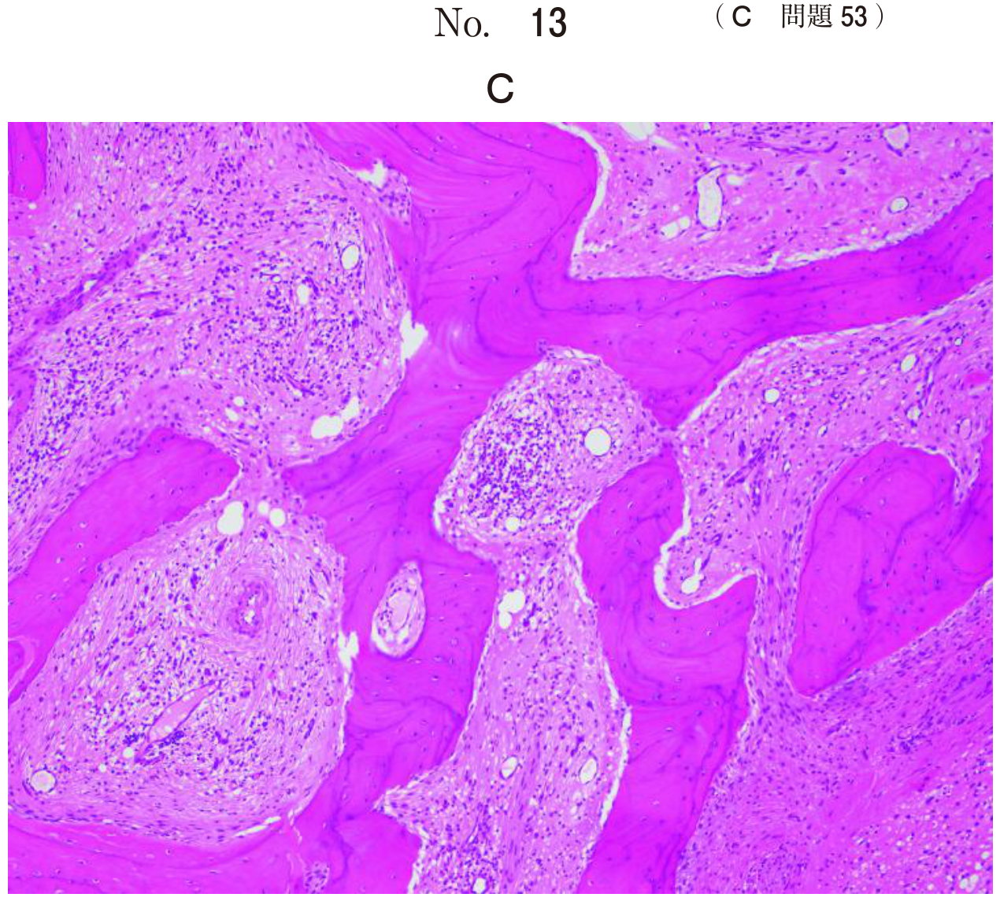
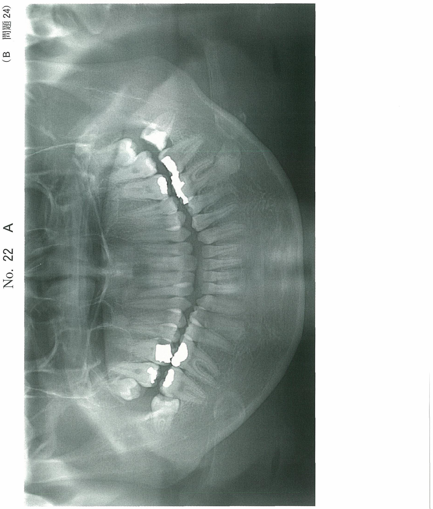
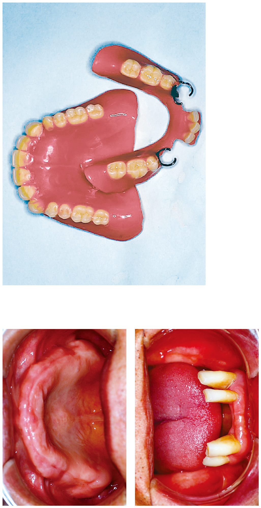
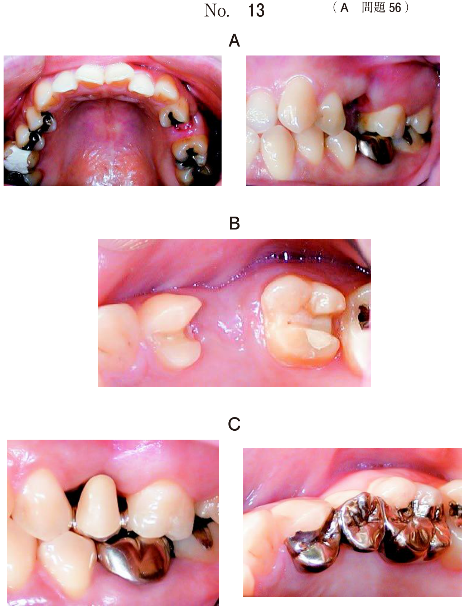

口腔粘膜の良性腫瘍
良性腫瘍の分類
口腔粘膜（軟組織）に発生する良性腫瘍は、上皮性と非上皮性に大別される。
口腔粘膜の主な良性腫瘍
| 分類 | 腫瘍名 | 由来 | 特徴的所見 |
|---|---|---|---|
| 上皮性 | 乳頭腫 | 扁平上皮 | 有茎性、カリフラワー状 |
| 角化棘細胞腫 | 扁平上皮 | 火山口状、自然消退あり | |
| 非上皮性 | 血管腫・血管奇形 | 血管系 | 退色性、被圧縮性 |
| 神経鞘腫 | Schwann細胞 | Antoni A/B型、S-100陽性 | |
| 神経線維腫 | Schwann細胞＋線維芽細胞 | NF1との関連 | |
| 脂肪腫 | 脂肪細胞 | 黄白色、被膜あり | |
| リンパ管奇形 | リンパ管 | 舌の巨舌症 |
血管腫・血管奇形
血管系の腫瘍・腫瘤は、ISSVA分類により血管腫（vascular tumor）と血管奇形（vascular malformation）に二分される。従来「血管腫」と呼ばれていた病変の多くは血管奇形に分類される。
ISSVA分類の概要
| 分類 | 病変 | 特徴 |
|---|---|---|
| 血管腫 | 乳児血管腫（毛細血管腫） | 生後まもなく出現し自然退縮する。苺状血管腫（strawberry mark） |
| 血管奇形 | 毛細血管奇形 | ポートワイン母斑。自然消退しない |
| 静脈性血管奇形（海綿状血管腫） | 暗紫色、弾性軟、退色性・被圧縮性 | |
| 動静脈奇形 | 拍動性の腫脹。血管造影が必要 |
- 退色性：圧迫すると退色し、離すと元に戻る
- 被圧縮性：圧迫により縮小する
- 拍動や波動はない（拍動があれば動静脈奇形を疑う）
- MRI T2強調像で高信号
海綿状血管腫の特徴はどれか。2つ選べ。
b 硬 結
c 拍 動
d 退色性
e 被圧縮性
【解説】海綿状血管腫（静脈性血管奇形）の特徴は退色性と被圧縮性である。圧迫すると血液が押し出されて退色・縮小し、圧迫を解除すると元に戻る。拍動は動静脈奇形の特徴であり、海綿状血管腫にはみられない。
7歳の男児。舌の形態異常を主訴として来院した。触診で圧迫によって退色する。初診時の舌の写真（別冊No.124）を別に示す。 考えられるのはどれか。1つ選べ。

b 血管腫
c 地図状舌
d 正中菱形舌炎
e Blandin-Nuhn嚢胞
【解説】舌の形態異常で「圧迫によって退色する」が決め手。退色性は血管腫（血管奇形）に特徴的な所見である。地図状舌や正中菱形舌炎では圧迫による退色はみられない。
67歳の女性。口底部の腫脹を主訴として来院した。数年前から自覚していたが痛みがないためそのままにしていたところ、最近増大してきたという。初診時の口腔内写真（別冊No.21A）、MRI脂肪抑制T2強調像（別冊No. 21B）、術中の口腔内写真（別冊No. 21C）及び摘出時のH-E染色病理組織像（別冊No.21D）を別に示す。 診断名はどれか。1つ選べ。

b 脂肪腫
c 平滑筋腫
d リンパ管腫
e 類表皮嚢胞
【解説】口底部の腫脹で、病理組織像に多数の血管腔の増殖がみられれば血管腫と診断される。MRI脂肪抑制T2強調像で高信号を示すことも血管腫の特徴である。脂肪腫であればT1強調像で高信号を示す。
神経鞘腫
神経鞘腫（Schwannoma）は末梢神経のSchwann鞘から発生する良性腫瘍で、被膜を有する孤立性の膨隆を形成する。
臨床所見
- 好発部位：四肢、躯幹、頭頸部の軟部。口腔領域では舌に多い
- 限局性の弾性硬の類球形の膨隆。分葉状を呈することもある
- 大きさ：直径1〜2 cm。時に嚢胞状になることがある
- 無痛性だが、時には圧痛を有する
病理組織学的所見
| 型 | 特徴 |
|---|---|
| Antoni A型 | 紡錘形細胞が密に増殖。核が柵状配列（palisading）を示す。渦巻き状構造 |
| Antoni B型 | 細胞成分が疎で不規則に分布。粘液変性や嚢胞状変化を伴うことがある |
- 免疫染色：S-100タンパク陽性
- 被膜を有するため容易に摘出でき、再発は少ない
舌背部の腫瘤を主訴として来院した患者の初診時の口腔内写真（別冊No.24A）と切除時のH-E染色病理組織（別冊No. 24B）を別に示す。 診断名はどれか。1つ選べ。

b 脂肪腫
c 線維腫
d 神経鞘腫
e リンパ管腫
【解説】舌の腫瘤で、病理組織像に紡錘形細胞の密な増殖と柵状配列（palisading）がみられれば神経鞘腫（Antoni A型）と診断される。舌は口腔領域で神経鞘腫が最も好発する部位である。
41歳の男性。口底部の腫脹を主訴として来院した。1年前から腫脹に気付いていたが、痛みがないため放置していたという。弾性軟の腫瘤を触知する。初診時のMRI（別冊No.13A）、造影MRI（別冊No.13B）及び生検時のH-E染色病理組織像（別冊No.13C）を別に示す。 診断名はどれか。1つ選べ。

b 脂肪腫
c 多形腺腫
d 神経鞘腫
e リンパ管腫
【解説】口底部の無痛性腫瘤で、病理組織像にAntoni A型（紡錘形細胞の密な増殖、柵状配列）の所見がみられることから神経鞘腫と診断される。S-100タンパク陽性も確定診断の根拠となる。
乳頭腫
乳頭腫（papilloma）は皮膚や粘膜上皮から発生する良性の上皮性腫瘍で、扁平上皮乳頭腫（squamous papilloma）ともよばれる。発生原因としてヒトパピローマウイルス（HPV）の関与が指摘されている。
臨床所見
- 好発部位：舌、口蓋に好発
- 乳頭状あるいはカリフラワー状に増殖する有茎性の腫瘤
- 白色で疣状のものが多い
- 大きさ：直径10 mm以下が多い
- 各年齢層を通じて発生し、年齢の上昇とともに発生頻度は高くなる
病理組織学的所見
- 重層扁平上皮が乳頭状あるいは樹枝状に増殖
- 表層は過角化を伴う。角化が著しく充進した上皮の肥厚がみられる
- 基底膜が明瞭で、細胞の異型性は少ない
治療・予後
外科的切除を行うとともに、刺激の原因となるものの除去を行う。予後は良好。
右側口蓋の病変の写真（別冊No.21A）とH-E染色病理組織像（別冊No.21B）を別に示す。 診断名はどれか。1つ選べ。

b 乳頭腫
c 多形腺腫
d 粘表皮癌
e 扁平上皮癌
【解説】口蓋の有茎性腫瘤で、病理組織像に上皮の樹枝状増殖と過角化がみられれば乳頭腫と診断される。多形腺腫は唾液腺由来で上皮と間葉の二相性増殖を示し、扁平上皮癌では異型性や浸潤がみられる。
脂肪腫
脂肪腫（lipoma）は分化した脂肪細胞からなる良性非上皮性腫瘍で、もっとも多い良性腫瘍の一つである。口腔領域での発生は比較的まれ。
臨床所見
- 皮膚あるいは粘膜下に無痛性の弾性軟の膨隆
- 上皮直下に存在する場合は黄白色を呈する
- 被膜に包まれ、充実性
- 口腔領域では頬粘膜や口腔底に発生することがある
病理組織学的所見
- 成熟脂肪細胞から構成。小葉構造を示す
- 線維性被膜によって被覆されている
- 正常の脂肪組織とはほぼ区別がつかない
画像・治療
- MRI：T1強調像で高信号（脂肪成分を反映）
- 治療：腫瘍摘出術。被膜に包まれているため再発は少ない
38歳の女性。左側顎下部の腫脹を主訴として来院した。5年前から同部の無痛性腫脹に気付いたという。初診時の顔貌写真（別冊No.25A）、MRIのT2強調像（別冊No.25B）及び摘出物のH−E染色病理組織像（別冊No.25C）を別に示す。 診断名はどれか。1つ選べ。

b 脂肪腫
c 多形腺腫
d リンパ管腫
e 歯原性粘液腫
【解説】5年来の無痛性腫脹で、病理組織像に成熟した脂肪細胞の集簇がみられることから脂肪腫と診断される。多形腺腫であれば上皮と間葉の二相性増殖を示し、リンパ管腫であれば拡張したリンパ管腔が認められる。
神経線維腫
神経線維腫（neurofibroma）はSchwann細胞と線維芽細胞の混在によって構成される良性腫瘍である。口腔領域では舌に多くみられる。
神経鞘腫との違い
| 項目 | 神経鞘腫 | 神経線維腫 |
|---|---|---|
| 構成細胞 | Schwann細胞のみ | Schwann細胞＋線維芽細胞 |
| 被膜 | あり（摘出容易） | なし（境界不明瞭） |
| 病理所見 | Antoni A/B型、palisading | 波状に走行する核や細胞質を有する膠原繊維の増殖 |
| 多発性 | 通常孤立性 | NF1で多発 |
神経線維腫症I型（von Recklinghausen病）
- 常染色体優性遺伝（neurofibromin遺伝子とmerlin遺伝子の変異）
- 多発性神経線維腫＋café-au-lait斑（カフェオレ斑）
- 皮膚の色素斑は常染色体優性遺伝の指標となる
4歳の女児。上顎右側の腫れを主訴として来院した。初診時の下顔面の写真（別冊No.8A）、口腔内写真（別冊No.8B）及びエックス線写真（別冊No.8C）を別に示す。 腫大の原因として考えられるのはどれか。1つ選べ。

b 神経線維腫
c 歯原性粘液腫
d 線維性異形成症
e エナメル上皮腫
【解説】小児の片側性上顎腫大で、神経線維腫が考えられる。神経線維腫は時間の経過とともに増大し、大きな蔓状の腫瘤となることがある。神経線維腫症I型（von Recklinghausen病）の部分症状として発現している可能性もある。
良性腫瘍の検査
口腔内に腫瘤を発見した場合、良性・悪性の鑑別のためにまず生検（biopsy）を行うことが重要である。
75歳の女性。左側舌縁部の腫瘤を主訴として来院した。3か月前に気付いたが、大きさに変化がないのでそのままにしていたという。腫瘤は無痛性で弾性軟である。初診時の口腔内写真（別冊No.19A）とMRI（別冊No.19B）を別に示す。 まず行うべき対応はどれか。1つ選べ。

b 切 開
c 抗菌薬投与
d 擦過細胞診
e 舌部分切除
【解説】舌縁部の腫瘤に対しては、良性・悪性の鑑別のためまず生検を行う。舌縁部は口腔癌の好発部位でもあるため、画像所見だけで良性と判断して直ちに切除することは避け、組織学的診断を確定してから治療方針を決定する。擦過細胞診は粘膜表面の病変には有用だが、粘膜下腫瘤の診断には不十分である。
鑑別のまとめ
口腔粘膜の良性腫瘍：鑑別の要点
| 腫瘍 | 臨床的特徴 | 病理的特徴 |
|---|---|---|
| 乳頭腫 | カリフラワー状、有茎性 | 上皮の樹枝状増殖、過角化 |
| 血管腫 | 退色性・被圧縮性 | 血管腔の増殖 |
| 神経鞘腫 | 舌に好発、被膜あり | Antoni A/B型、palisading、S-100陽性 |
| 神経線維腫 | NF1で多発、被膜なし | Schwann細胞＋線維芽細胞の混在 |
| 脂肪腫 | 黄白色、弾性軟、被膜あり | 成熟脂肪細胞、MRI T1高信号 |
| リンパ管腫 | 舌の巨舌、頸部膨隆 | 拡張したリンパ管腔 |